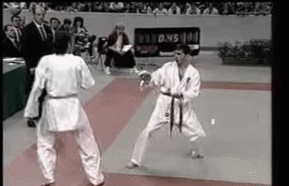
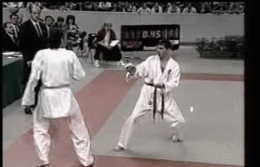

Shirokaze Do Shotokan Karate Club
Is owned and run by Paul Drayton
He can be contacted at the following address
Sensei Drayton
125 West Haven Road
Cozenbury
Cozchester
CZ14 7RB
e-mail paul@sensei.coz
The Club is firmly based on the beliefs and principles established by Gichin Funakoshi (1868-1957)
The priciples the Shotokan School is based upon the details below.
Never forget: karate begins with rei and ends with rei (Rei means courtesy or respect, and is represented in karate by bowing)
There is no first attack in karate
Karate supports righteousness
First understand yourself, then understand others
The art of developing the mind is more important than the art of applying technique
The mind needs to be freed
Trouble is born of negligence / ignorance
Do not think karate belongs only in the dojo
Karate training requires a lifetime
Transform everything into karate; therein lies its exquisiteness
Karate is like hot water, if you do not give it heat constantly, it will again become cold water
Do not think that you have to win, rather think you do not have to lose
Transform yourself according to the opponent
The outcome of the fight depends on one's control
Imagine one's arms and legs as swords
Once you leave the shelter of home, there are a million enemies
Postures are for the beginner; later they are natural positions
Perform the kata correctly; the real fight is a different matter
Do not forget control of the dynamics of power, the elasticity of the body and the speed of the technique
Apply the way of Karate to all things. Therein lies its beauty.
 
